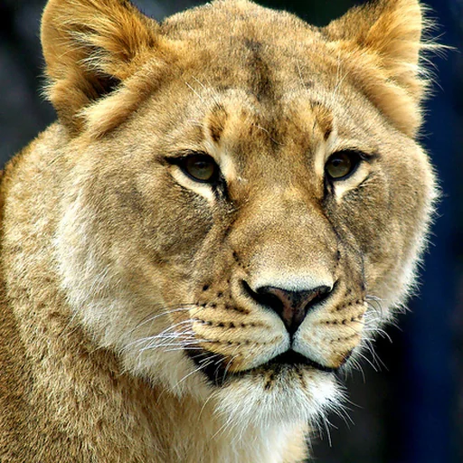
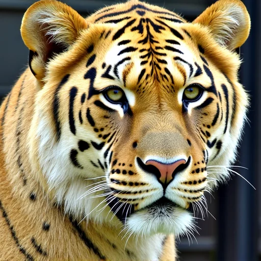
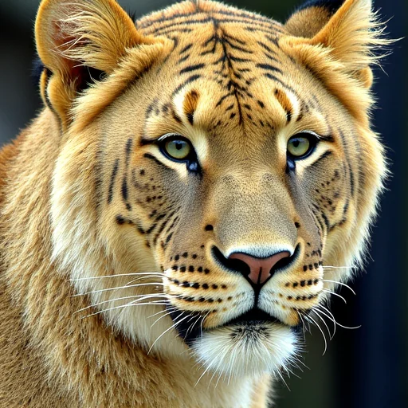
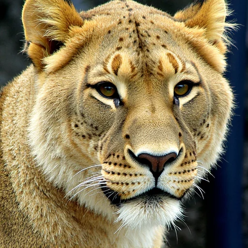
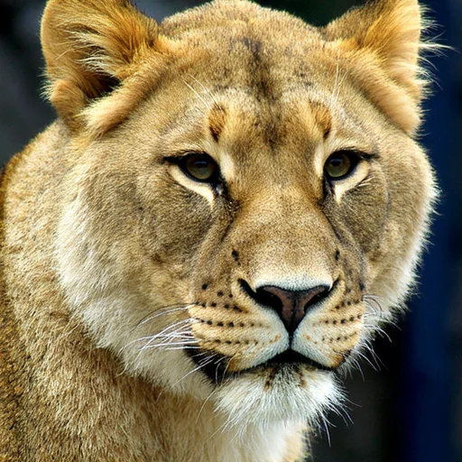

Study 1: same reference
Raters ordered five forks of one image by similarity to it.





Reference (outlined), then forks from least to most similar. Example images.
0.970
rank correlation with the fork order, 1,982 annotations